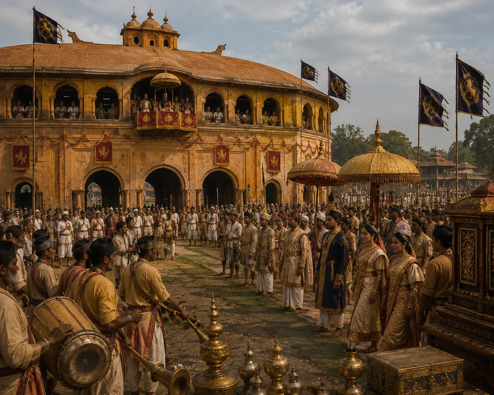

Royal Court Assembly at the Rang Ghar Pavilion
c. 1748 · The Tungkhungia kings

Aristocratic gathering of Gohains, royal ladies, and vassal chiefs on the terrace of Rang Ghar during spring festivities.
Sources have not yet been catalogued for this record.
People: Pramatta Singha (Sunenphaa)
Open this scene in the interactive archive · Follow this event on MAP